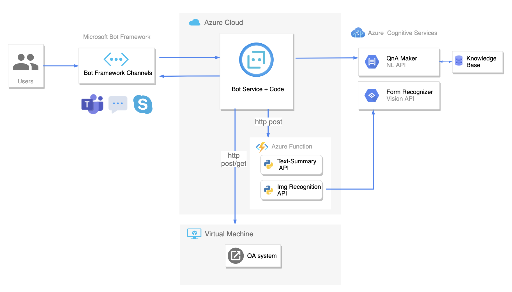
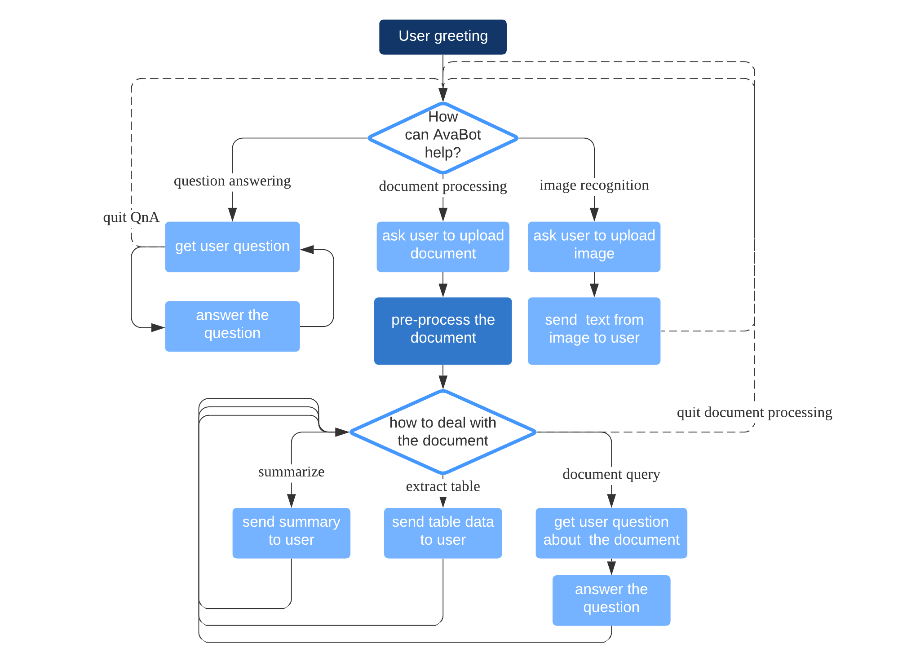
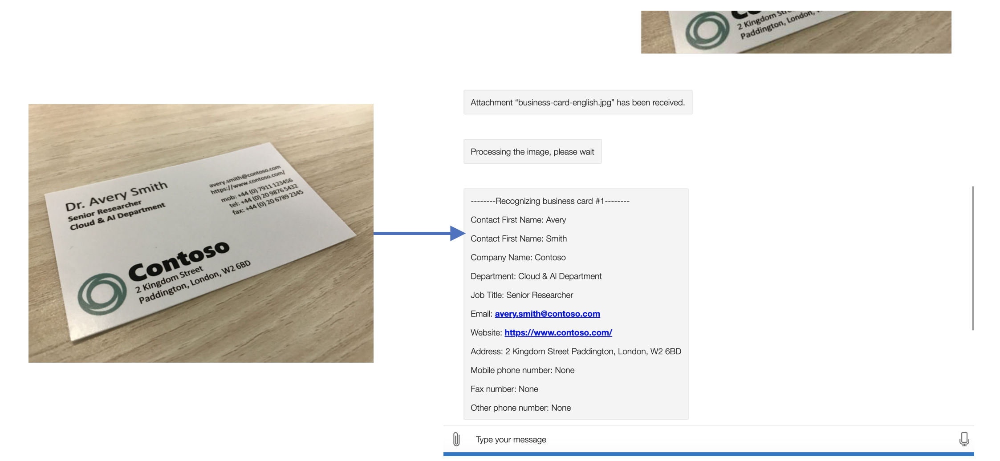

Project Title: Avanade2 COVID19 changes Team Member: Zihan Zhu, Chaozy Zhu, Davit Mirzoyan
Due to the COVID-19 epidemic, most companies have switched to remote working, however, productivity and communication take a hit when employees are new to working from home.
AvaBot is therefore created to ease the pain, it is a ChatBot assistant that holds rich knowledge base to answer employees' questions about the company's newly induced tools and policies for remote working.
It is also endowed with AI functionalities, including natural language processing and image recognition, to help employees with documents: to read, analyze, and understand documents for them and thus enhance their productivity.
AvaBot application system consists of several components.
Users can interact with AvaBot as a REST API on web chat and on multiple applications to which it is channeled.
The bot source code is deployed to Azure Cloud by using Azure Bot Service. The bot src can be found ./AvabotTeam8-src/.
AvaBot is connected to a QnA Maker with rich knowledge base that allows it to answer a variety of questions. The QnA Maker is configured in ./AvabotTeam8-src/dialogs/answerDialog.js.
Document processing functionalities are integrated to AvaBot by APIs. The code of the APIs are in ./textSum/, ./QAsystem/, and ./formRecogFunction/.
Due to the high complexity and dependency on environment, QA system has been placed to a virtual machine in order to optimize its performance.
Below is the system architecture diagram for AvaBot:

Below is the dialog flow diagram for AvaBot:

Below is the project tree showing the main files and their uses in the repository:
.
├── AvabotTeam8-src/ # The bot source code
│ ├── .vscode # VS Code configuration for bot development
│ ├── bots/
│ └── avabot.js # The bot class
│ ├── coverage/ # Testing coverage report
│ └── dialogs/ # The bot's dialog classes
│ └── mainDialog.js
│ └── ...
│ ├── node_modules/ # Node module dependencies for the project
│ ├── PostDeployScripts/ # Bot Deployment Scripts for setting continuos deployment
│ ├── test/ # Unit tests and integration tests for the bot
│ ├── .env # environment file for connecting to azure services
│ ├── index.js # App entry point
│ ├── package.json # Node.js package configuration file
│ ├── web.config # Configuration file if using iisnode behind Express
│ └── ...
├── docs/ # Documentation files
├── formRecogFunction/ # Src and documents for Form Recognizer API
├── QAsystem/ # Src and documents for QA system API
├── testAPI_example/ # Demo for calling APIs in python
├── textSum/ # Src and documents for Text Summarization API
├── WebBrowserBot/ # Demo for running AvaBot on a web browser
├── AvaBot.bot # Bot configuration file for running the bot on MS bot emulator
├── LICENCE # License for the project
└── *.md # Project documentation files
AvaBot has been created using MS Bot Framework, it can
Bypass ngrok for local address boxRun ngrok when the Emulator starts up boxClone the repository
git clone https://github.com/UCLComputerScience/COMP0016_2020_21_Team8.git
Make sure MicrosoftAppId, MicrosoftAppPassword, QnAKnowledgebaseId, QnAEndpointKey, and QnAEndpointHostName are correctly configured in AvabotTeam8-src/.env file
In a terminal, navigate to AvabotTeam8-src
cd AvabotTeam8-src
Install modules
npm install
Run the bot
npm start
Launch Bot Framework Emulator
File -> Open Bot
Browse and choose AvaBot.bot in the COMP0016_2020_21_Team8 repository
The testing of the project uses mocha, chai, and MS botbuilder-testing package. Make sure you have installed them by npm install.
AvabotTeam8-srcnpm run test
npm run cover
npm run coverage
Note: for passing all the tests, make sure the APIs used by the bot are working properly.
To develop your own bot application, see Azure Bot Service for creating Web App Bot resource and configure the AvabotTeam8-src/.env file with your AppId and AppPassword.
To learn more about deploying a bot to Azure, see Deploy your bot to Azure for a complete list of deployment instructions.
AvaBot is hosted on the Azure Bot Service. The service defines a REST API and an activity protocol for how bots and channels or users can interact. AvaBot's messaging endpoint is at https://avabotteam8.azurewebsites.net/api/messages.
Demo for using the bot on a web browser can be found in ./WebBrowserBot/.

